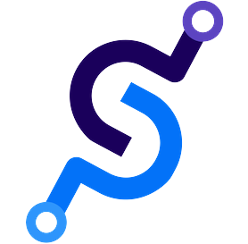
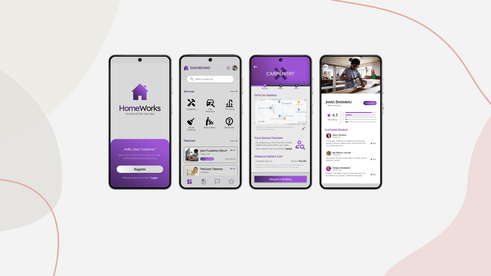
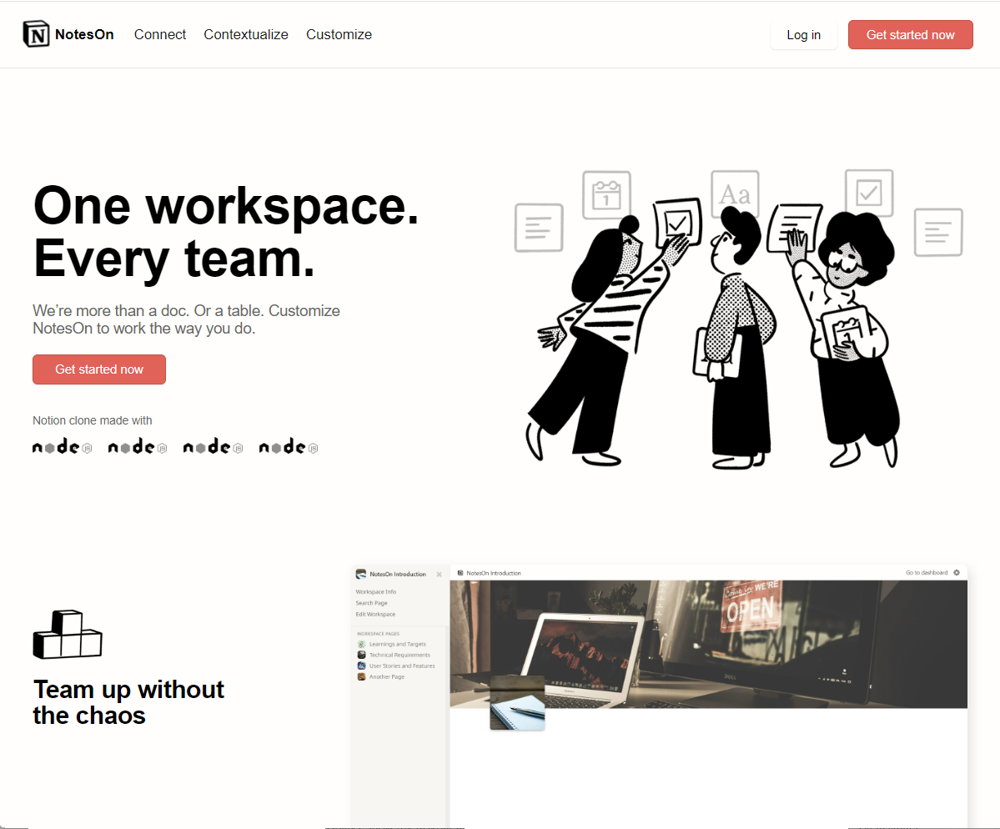
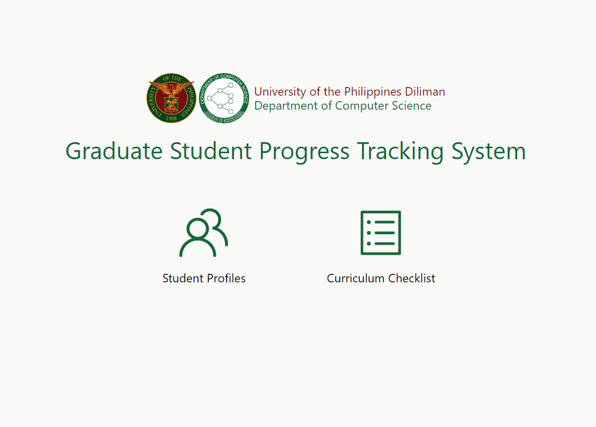

Kim Bryann Tuico
a Full Stack Developer with a passion for graphic design and visual arts

About Me
Has developed websites, mobile apps, and games. Has designed pubmats such as animations, illustrations, and other media.
Experiences
Contributing my expertise and passion within a collaborative team environment.
Driven full stack developer with a passion for crafting elegant solutions and leveraging technology to drive innovation. Explore my diverse range of experiences.
View MoreProjects
Most fulfilling way to delve into my interests is through hands-on projects.
As a passionate computer science graduate, I’m always up for the challenge, whether it's building websites, crafting games, or developing mobile applications.
View MoreSkills
Dive into the broad spectrum of my professional skills in the field of software development and visual design.
01 Computer Languages
- Programming Languages
- C & C++, Python, Java, Rust, SQL, Typescript
- Scripting Languages
- Bash, Javascript, Powershell, Visual Basic
- Style Sheet and Markup
- CSS, SASS, HTML, LaTeX
02 Libraries and Framework
- Frontend Stack
- Angular, Bootstrap, Tailwind CSS, React.JS, React Native, Expo
- Backend Stack
- Express.JS, Socket.IO, Django, Pyglet
- Data Science
- Pandas, Numpy, Scipy, Scikit-Learn
03 Platforms and Environment
- Development Tools
- Docker, Git + Github, Node.JS, Visual Studio Code, Postman, Figma, Mockplus, Android Studio
- Database and Cloud
- MySQL, SQLite, Redis, Amazon Web Services, Google Cloud, Wireshark
04 Design Tools and Apps
- Adobe Cloud Creative
- Photoshop, Illustrator, Premiere Pro
- The Affinity Suite
- Affinity Photo, Affinity Publisher, Affinity Designer
- Microsoft Office
- Microsoft Powerpoint, Clipchamp, Microsoft Publisher
Experiences
| Mobile Developer / Diliman, Quezon City | ||
| Science and Software Engineering Lab | Sep 2022 - Dec 2023 | |
|
During my tenure as an Undergraduate Researcher at S3Lab, I actively contributed to one of our projects, HomeWorks Mobile App. I successfully developed mobile applications that connect home service providers and seekers. This hands-on experience not only solidified my technical foundation but also culminated in the publication of the project in the NiDS 2023 proceedings of Athens, Greece. Furthermore, I had the opportunity to present the manuscript at the WCTP 2023 conference at Hokkaido, Japan which further hones my communication and presentation skills. |
||
|  | Software Engineer Intern / Bonifacio Global City, Taguig | |
| Saperium Inc., | Jun 2022 - Aug 2022 | |
|
My internship at Saperium Inc. provided a dynamic environment where I contributed to noteworthy projects, namely YouPerium: a YouTube clone and NotesOn WebApp. Collaborating with fellow interns, I led the Frontend development of YouPerium. Additionally, I spearheaded the solo development of NotesOn WebApp, a Notion clone demonstrating my ability to independently manage and execute projects. Ultimately, I received recognition as one of the Top 3 Interns of Batch 2022. These experiences have not only enriched my technical expertise but have also equipped me with valuable insights into collaborative development and project leadership. |
||
| Software Developer Intern / Diliman, Quezon City | ||
| Department of Computer Science | Jun 2022 - Aug 2022 | |
|
As a Software Developer Intern, I played an active role in the development of the Graduate Student Progress Tracking System. One of my primary responsibilities was implementing robust security measures to ensure the protection of sensitive data. I focused particularly on authentication protocols, designing and implementing an authentication system that enabled secure login and account creation functionalities. Through this experience, I gained valuable insights into security best practices and the importance of safeguarding data integrity in software systems. |
||
Projects
HomeWorks: Home Services App
Express.JS, Node.JS, React Native, Expo, Figma, MySQL, Docker, Socket.IO, Android Studio, Google Cloud
Providing a convenient, reliable, and hassle-free way of finding and booking house related services, HomeWorks Mobile App is a general platform that connects users with various home and wellness service providers in their area.
NotesOn WebApp: A Notion Clone
Express.JS, Node.JS, Angular, Bootstrap, CSS, MySQL, Redis, Docker, Socket.IO, Typescript
Seamlessly organize notes, assignments, and collaborative efforts, NotesOn WebApp is a Notion Clone which is a versatile productivity tool that combines note taking, project management, and database functionalities into one platform.
Student Progress Tracking System
EPython, Django, SQLite,HTML, Tailwind CSS, Mockplus
For a simpler, more user-friendly, and less error-prone tracking system, DCS GSPTS is a web application for managing proposed plan of study particularly for graduate students under the Department of Computer Science in the University.
Contact Me
Let’s connect! Feel free to reach out through the channels below. I’m always eager to collaborate and discuss exciting opportunities.